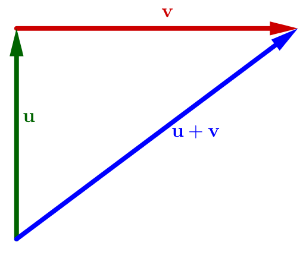

Calculus &
Linear Algebra II
Chapter 10
10 Orthogonality
The goal of this section is to develop our understanding of orthogonality in the context of inner product spaces.
10.1 Norm
The norm (or magnitude or length) of an element $\bfv=(v_1,\ldots,v_n)$ of $\R^n$ is given by the familiar expression $$ ||\bfv||=\sqrt{\bfv\pd\bfv}=\sqrt{v_1^2+\ldots+v_n^2}. $$ There is a similar notion for any real inner product space $V$. The norm of a vector $\bfv\in V$, denoted by $||\bfv||$, is thus defined by $$ ||\bfv||=\sqrt{\langle\bfv,\bfv\rangle}. $$ A vector with norm $1$ is called a unit vector.
10.1 Norm
How would we define the distance, $d(\bfu,\bfv)$, between two vectors $\bfu,\bfv\in V$? A natural notion of distance between two vectors should be independent of the order we happen to be viewing them. That is, we want the distance measure to be symmetric: $d(\bfu,\bfv)=d(\bfv,\bfu)$. Again using $\R^n$ as inspiration, we now define the distance between two vectors $\bfu,\bfv\in V$ as $$ d(\bfu,\bfv)=||\bfu-\bfv||. $$
The symmetry $d(\bfu,\bfv)=d(\bfv,\bfu)$ follows from
$
\langle\bfu-\bfv,\bfu-\bfv\rangle
$
$
=\langle\bfu,\bfu\rangle-\langle\bfu,\bfv\rangle-\langle\bfv,\bfu\rangle+\langle\bfv,\bfv\rangle
$
$=\langle\bfv-\bfu,\bfv-\bfu\rangle.\;\;$
10.1 Norm
Note that the notions of norm and distance are relative to the inner product used! For example, with the inner product given in Example 8.8, the norm of a real-valued continuous function on $[-1,1]$ is given as follows:
$\ds \langle \mathbf f, \mathbf g \rangle = \int_{-1}^{1} f(x)g(x) ~dx$ $\ds \;\Ra ||\mathbf f|| = \sqrt{\int_{-1}^{1} \big(\,f(x)\big)^2 dx}$
10.1 Norm
Note that the notions of norm and distance are relative to the inner product used! For example, with the inner product given in Example 8.8, the norm of a real-valued continuous function on $[-1,1]$ is given as follows:
$\ds \langle \mathbf f, \mathbf g \rangle = \int_{-1}^{1} f(x)g(x) ~dx$ $\ds \;\Ra ||\mathbf f|| = \sqrt{\int_{-1}^{1} \big(\,f(x)\big)^2 dx}$
However, if we define the inner product as \[ \int_{-1}^{1} e^xf(x)g(x) ~dx, \] $$\ds \text{then } \;||\mathbf f|| = \sqrt{\int_{-1}^{1} e^x \big(\,f(x)\big)^2 dx}.$$
10.1 Norm
As in $\R^n$ with inner product given by the usual dot product, we say that two vectors $\bfu,\bfv\in V$ are orthogonal if $$ \langle\bfu,\bfv\rangle=0. $$ We need a bit of preparation before we can talk more generally about the angle between two vectors, see Section 10.5.
Remark: Notion of orthogonality is also relative to the inner product used.
🤔
10.2 Pythagorean theorem
Let $V$ be a real inner product space, and let $\bfu,\bfv\in V$. Then, $$ ||\bfu+\bfv||^2=||\bfu||^2+||\bfv||^2 \quad\Longleftrightarrow\quad \langle\bfu,\bfv\rangle=0. $$
|
Geometrically:  |
On the other hand:
Hence $$||\bfu+\bfv||^2=||\bfu||^2+||\bfv||^2 \iff \langle\bfu,\bfv\rangle=0. \,\blacksquare$$ |
10.3 Cauchy-Schwarz inequality
Let $V$ be a real inner product space, and let $\bfu,\bfv\in V$. Then, $$ |\langle\bfu,\bfv\rangle|\leq||\bfu||\,||\bfv||. $$ Moreover, this inequality is an equality if and only if $\bfu$ or $\bfv$ is a scalar multiple of the other vector.
For $\u = \mathbf 0\;$ ✅ 😃. For $\u \neq \mathbf 0$, let $t\in \R$ and
$a = \langle \u, \u\rangle $, $b = 2 \langle \u, \v\rangle $, $c = \langle \v, \v\rangle .$
Then $0 \leq \langle t\,\u + \v, t\,\u + \v \rangle$
$ = \langle \u, \u\rangle t^2 + 2\langle \u, \v \rangle t + \langle \v, \v\rangle$
$ \qquad \qquad\quad \ds = at^2 + b t + c$
10.3 Cauchy-Schwarz inequality
👉 $0 \leq \langle t\,\u + \v, t\,\u + \v \rangle$ $ = \langle \u, \u\rangle t^2 + 2\langle \u, \v \rangle t + \langle \v, \v\rangle$ $ \ds = at^2 + b t + c$
In this case we must have that $b^2 -4ac \leq 0$. So \[ 4 \langle \u, \v\rangle^2 - 4 \langle \u, \u\rangle\langle \v, \v\rangle \leq 0. \] Or equivalently \[ \langle \u, \v\rangle^2 \leq \langle \u, \u\rangle \langle \v, \v\rangle . \]
Taking square roots of both sides and using the fact that $\langle \u, \u\rangle$ and $\langle \v, \v\rangle $ nonnegative yields
$\ds \abs{\langle \u, \v\rangle}\leq \langle \u, \u\rangle^{1/2} \langle \v, \v\rangle ^{1/2}\; $ or $\; |\langle\bfu,\bfv\rangle|\leq||\bfu||\,||\bfv||.\;\blacksquare$
10.4 Triangle inequality
Let $V$ be a real inner product space, and let $\bfu,\bfv\in V$. Then, $$ ||\bfu+\bfv||\leq||\bfu||+||\bfv||. $$
|
Geometrically: 
|
Proof:
Hence $||\bfu+\bfv||\leq||\bfu||+||\bfv||.\; \blacksquare$ |
10.5 Angle between two vectors
In $\R^n$, angle $\theta$ between $\u$ and $\v$ is given by \[ \cos \theta = \frac{\u \pd \v}{\norm{\u}\norm{\v}}, \quad \theta\in [0,\pi]. \]
In general, any real inner product space $V$, similarly define \[ \cos \theta = \frac{\langle \u , \v \rangle}{\norm{\u}\norm{\v}}, \quad \theta\in [0,\pi]. \]
For this to make sense we must have \[ -1 \leq \frac{\langle \u , \v \rangle}{\norm{\u}\norm{\v}} \leq 1. \]
10.6 Orthogonal complement
Let $U$ be a subset of the real inner product space $V$. The orthogonal complement of $U$, denoted by $U^\bot$, is the set of all vectors in $V$ that are orthogonal to every vector in $U$. That is, $$ U^\bot=\{\bfv\in V\,|\,\langle\bfv,\bfu\rangle=0\text{ for every } \bfu\in U\}. $$ This is a vector space with addition and scalar multiplication inherited from $V$.
10.6.1 Example: For $A\in M_{m,n}(\mathbb{R})$, Row$(A)^\bot = N(A)$ with respect to the Euclidean inner product
Write $\;\ds A = \begin{pmatrix} \mathbf r_1\\ — \\ \mathbf r_2\\ — \\ \vdots \\ —\\ \mathbf r_m\\ \end{pmatrix}\; $ where $\mathbf r_1, \mathbf r_2,\ldots ,\mathbf r_m$ denote the rows, $$\text{i.e., }\quad\text{Row}(A) = \text{span}\left(\left\{ \mathbf r_1, \mathbf r_2,\ldots ,\mathbf r_n\right\}\right)$$
10.6.1 Example: For $A\in M_{m,n}(\mathbb{R})$, Row$(A)^\bot = N(A)$ with respect to the Euclidean inner product
Let $\mathbf x = \left(x_1,x_2, \ldots, x_n \right)$ be a row vector, then
$A\mathbf x^T$ $ = \ds \begin{pmatrix} \mathbf r_1\\ — \\ \vdots \\ —\\ \mathbf r_m\\ \end{pmatrix} \begin{pmatrix} x_1\\ \quad \\ \vdots \\ \quad \\ x_n\\ \end{pmatrix} $ $ = \ds \begin{pmatrix} \mathbf r_1 \mathbf x^T\\ \quad \\ \vdots \\ \quad\\ \mathbf r_m \mathbf x^T\\ \end{pmatrix} $ $ = \ds \begin{pmatrix} \mathbf r_1 \pd \mathbf x\\ \quad\\ \vdots \\ \quad\\ \mathbf r_m \pd \mathbf x\\ \end{pmatrix} $
So $A \mathbf x^T = \mathbf 0\;$ iff $\;\mathbf r_i \pd \mathbf x = 0$ $\forall i.$
This implies $\mathbf x \in N(A)\;$ iff $\; \mathbf x\in \text{Row}(A)^{\perp}.$
Therefore $\;\text{Row}(A)^{\perp}=N(A).\quad \blacksquare$
10.6.2 $U^\bot$ is an example of a subspace
A nonempty subset $W$ of a vector space $V$ is a subspace of $V$ if it is a vector space under the addition and scalar multiplication defined on $V$. To verify that a subset is a subspace, one checks the following:
- $\mathbf 0 \in W$?
- $\u + \v \in W$? for all $\u,\v\in W$.
- $k\u \in W$? for all $\u \in W, k\in \R$.
Now we prove that $U^\bot$ is an example of a subspace.
📝 Exercise.